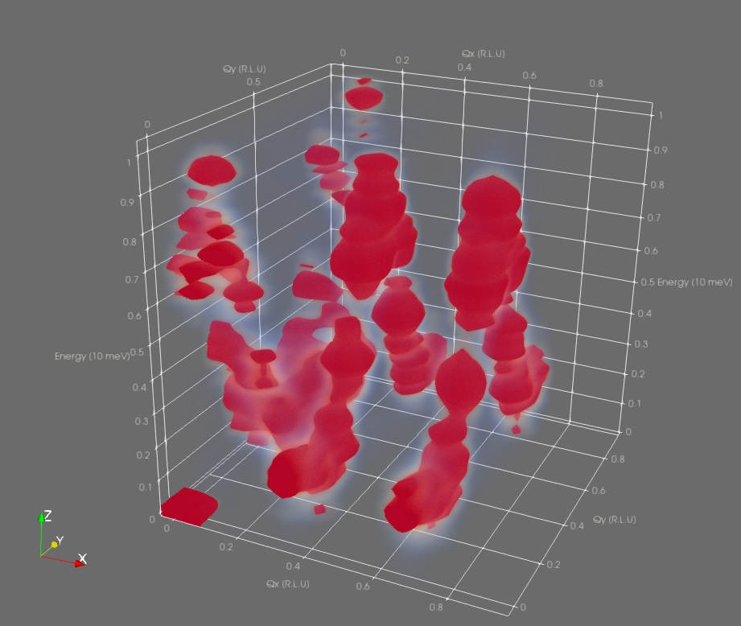
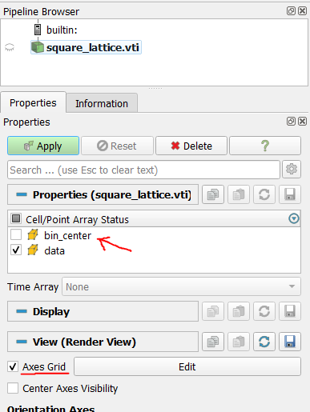
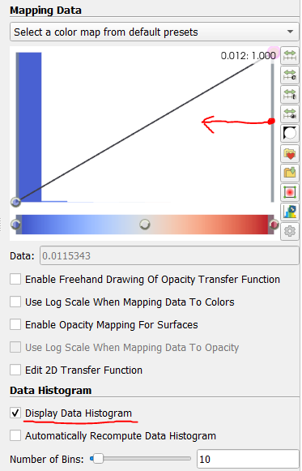

ParaView Rendering
The 4D correlation data produced by Sunny is too high-dimensional to visualize directly. This page describes how to export 3D slices of correlation data from Sunny to the Visual ToolKit (VTK) format, which is compatible with the ParaView visualization software. ParaView supports volumetric rendering:
Simulation data
First, generate some correlation data in Sunny. We will use a 2D lattice, since the correlation data $S(Q_x,Q_y,\omega)$ is 3D and can be exported in its entirety. The following code sets up the system, thermalizes it, and records the correlation data in a SampledCorrelations called dsf.
using Sunny
latvecs = lattice_vectors(8.,8.,12.,90,100,90)
positions = [[0,0,0]]
types = ["Cu"]
formfactors = [FormFactor("Cu2")]
xtal = Crystal(latvecs, positions; types)
sys = System(xtal, [1 => Moment(s=1/2, g=2)], :SUN; dims=(12, 12, 1), seed=1)
J = 10.
set_exchange!(sys, J, Bond(1,1,[1,0,0]))
set_exchange!(sys, J, Bond(1,1,[0,1,0]))
dt = 0.01
kT = 0.5
langevin = Langevin(dt; damping=0.5, kT)
randomize_spins!(sys)
for i in 1:10_000 # Long enough to reach equilibrium
step!(sys, langevin)
end
ωmax=10.
dsf = SampledCorrelations(sys; dt, energies=range(0, ωmax, 48))
nsamples = 10
for _ in 1:nsamples
for _ in 1:1000
step!(sys, langevin)
end
add_sample!(dsf, sys)
endThe default histogram BinningParameters are already integrated over the $z$ direction because the system is 2D:
unit_resolution_binning_parameters(dsf)⊡ 12 bins from -0.042 to +0.958 along [+1.27 dx] (Δ = 0.065)
⊡ 12 bins from -0.042 to +0.958 along [+1.27 dy] (Δ = 0.065)
∫ Integrated from +0.000 to +0.000 along [-0.33 dx +1.88 dz] (Δ = 0.524)
⊡ 48 bins from -0.107 to +10.134 along [+1.00 dE] (Δ = 0.213)The histogram is very oblong; it's approximately 1x1x10. To make it a nicer shape, we will rescale the energy axis to be be fractions of ωmax:
params = unit_resolution_binning_parameters(dsf)
scale_factor = ωmax
params.binend[4] /= scale_factor
params.binstart[4] /= scale_factor
params.binwidth[4] /= scale_factor
params.covectors[4,:] ./= scale_factorDoing this changes the last axis of the histogram to fit in [0,1]:
⊡ 49 bins from -0.011 to +1.013 along [+0.10 dE] (Δ = 0.213)Now that our histogram is a cube, we compute the intensity in the histogram bins using the usual intensities_binned:
formula = intensity_formula(dsf, :trace)
signal, counts = intensities_binned(dsf, params; formula)
intensity = signal ./ countsNow that we have our intensity data and the binning parameters, we can export to VTK format using export_vtk and move to ParaView for the visualization.
# Importing WriteVTK enables Sunny's export-to-VTK functions
import WriteVTK
# [1,2,4] specifies that the (x,y,z) axes in ParaView are (Qx,Qy,ω)
export_vtk("square_lattice", params, intensity; dims_kept = [1,2,4])
# Writes a file square_lattice.vti in the current directoryLoading in ParaView
In ParaView, use File > Open to open square_lattice.vti. This will add the file to the Pipeline Browser with a closed eye icon, indicating that the data is ready to be loaded.
In the Properties panel, both bin_centers and data will be selected for import by default. Uncheck bin_centers because we don't need that information for the visualization. Click the green Apply button to load the data.
By default, only the outline of the data is shown in the 3D viewport. Since we adjusted the energy axis, the outline is a 1x1x1 cube. Optionally enable the axes grid under "View", and customize using the adjacent edit button.
To enable the volumetric render:
- Select "Volume" from the "Representation" drop-down menu under "Display".
- The "Coloring" drop-down should automatically select
databecause it's the only data loaded. - Open the Color Map Editor to adjust the opacity of the fog, which may be too faint to see by default.
Depending on your computer and your dataset size, the volumetric rendering may be slow, but our dataset is relatively small, so the render should be fast.
If nothing shows up at first, don't despair. Often, there are Bragg-like peaks in the correlation data which outshine everything else. To see this, enable Display Data Histogram in the Color Map Editor panel. To zoom in on the lower-intensity data, click and drag the right side handle of the opacity transfer function box to the middle a few times.
After suitable color mapping, the dispersion curve should become visible:
Experiment data
Note that since only the data and binning parameters are required for exporting to VTK, experiment data can be exported in the same way. For example, to visualize $S(Q_x,Q_y,Q_z)$, do this:
# Load 4D histogram data from Mantid
params, signal = load_nxs("experiment_data.nxs")
# Integrate out the energy axis so we are 3D
integrate_axes!(params; axes = 4)
signal = sum(signal; dims = 4)
# Export to ParaView
export_vtk("experiment_data_as_vtk", params, signal)